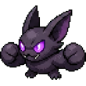

Tap a stage to read its story.
Noctkit is a compact dark bat that walks on its wing-knuckles with surprising confidence for its size. Its coat is a near-black grey with a faint purple sheen, and its eyes glow a stubborn bright violet. It was born somewhere in Steel Fortress's lower armory levels and has spent its short life jumping off increasingly tall ledges to test its wings - currently at about the third rung of the ammunition rack. The fortress engineers have quietly started placing cushions.
Field note: Noctkit has attempted 47 solo flights and landed cleanly on the 48th - it keeps precise count with scratches in the iron pillar it sleeps on.
Steel Fortress. Noctkit and its family are found in the Steel Fortress. See everyone who lives there.
Share a Bond Food that matches its types to become friends. Noctkit loves:
A Bond Food is not a trick. It joins your spirit with the Kimuro's spirit, and only when it chooses you.
Print the Kimuro adventure packs: mazes, cards, a board game and Bond Mark medals.
See the printable packs